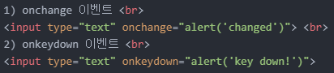

HTML과 JS가 만나는 두번째 방법
이것은 JS가 사용자와 상호작용하는 데 핵심적인 역할을 하는 것
버튼을 만들어보자
이 때 사용하는 태그는 input 태그이다.
1. input 태그 안에 type을 button으로 하면 버튼모양이 만들어진다.
2. 버튼 안에 글씨를 쓰고 싶으면 value라는 속성의 값을 사용
3. 버튼을 눌렀을 때의 반응은 onclick을 사용
onclick은 아주 특별한 속성이다.
HTML의 설명서에는 이렇게 적혀있다.
1. 'onclick 속성의 값으로는 반드시 JS가 와야 됩니다.'
2. 'onclick 속성의 속성 값은 웹브라우저가 기억하고 있다가
이 onclick속성이 위치하고 있는 태그
이것을 사용자가 클릭했을 때
기억하고 있던 JS코드를 JS문법에 따라 해석해
거기 적혀있는대로 웹브라우저가 동작할 것입니다.'
웹 브라우저 입장에서는 onclick속성을 만나면
'아 alert('hi')라고 하는 것을 기억하고 있다가
사용자가 이 버튼을 클릭하면 그 때 실행해야지'
라고 생각하고 기다리고 있다가 실제로 그런 일이 일어났을 때 실행을 한다.'
이렇게 웹브라우저 위에서 일어나는 일들을
사건, 영어로는 EVENT라고 한다.
버튼 외의 또 다른 이벤트, text를 활용한 이벤트
1) onchange 이벤트
2) onkeydown 이벤트

2022.06.12 김명일